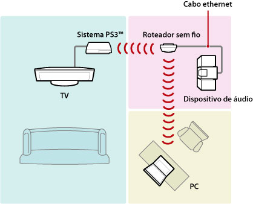
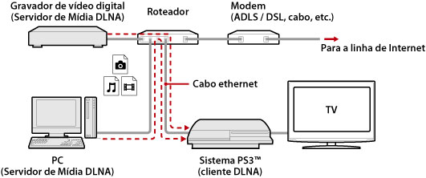
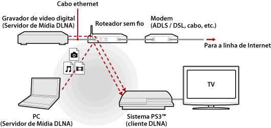
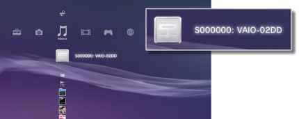
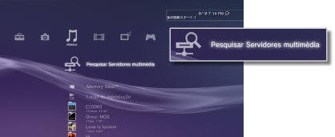

Configurações > Configurações de rede > Conexão ao servidor de mídia
Conexão ao servidor de mídia
Ajuste as configurações para a conexão com dispositivos que são compatíveis com DLNA.
| Habilitar | Habilita a conexão com dispositivos que são compatíveis com DLNA. |
|---|---|
| Desabilitar | Desabilita a conexão com dispositivos que são compatíveis com DLNA. |
Sobre DLNA
DLNA (Digital Living Network Alliance) é um padrão que permite que dispositivos digitais como computadores pessoais, gravadores de vídeo digitais e TVs se conectem em uma rede e compartilhem dados de outros dispositivos compatíveis com DLNA conectados.
Dispositivos compatíveis com DLNA possuem duas funções distintas. "Servidores" distribuem mídia, como arquivos de imagem, música ou vídeo, e "clientes" recebem e reproduzem a mídia. Alguns dispositivos realizam ambas as funções. Utilizando um sistema PS3™ como cliente, você pode exibir imagens ou reproduzir arquivos de música ou vídeo que estão armazenados em um dispositivo com função de Servidor de Multimídia DLNA em uma rede.

Conectando o sistema PS3™ e o Servidor de multimídia DLNA
Conecte o sistema PS3™ e o Servidor de Multimídia DLNA utilizando uma conexão com ou sem fio.
Exemplo de como conectar um computador pessoal utilizando uma conexão com fio

Exemplo de como conectar um computador pessoal utilizando uma conexão sem fio

Configurando um Servidor de multimídia DLNA
Configure o Servidor de Multimídia DLNA para que possa ser utilizado pelo sistema PS3™. Os seguintes dispositivos podem ser utilizados como Servidores Multimídia DLNA.
- Dispositivos que são compatíveis com o padrão DLNA, incluindo produtos de outras companhias além da Sony
- Computadores pessoais (PCs) com Windows Media Player 11 instalado
Quando utilizar um dispositivo AV como um Servidor de Multimídia DLNA
Habilite a função de Servidor de Multimídia DLNA no dispositivo conectado para tornar seu conteúdo disponível para acesso compartilhado. O procedimento de configuração varia dependendo do dispositivo conectado. Para obter detalhes, consulte as instruções fornecidas com o dispositivo.
Quando utilizar um computador pessoal com Microsoft Windows como Servidor de Multimídia DLNA
Um computador com Microsoft Windows pode ser utilizado como um Servidor Multimídia DLNA utilizando as funções do Windows Media Player 11.
1. |
Inicie o Windows Media Player 11. |
|---|---|
2. |
Selecione [Compartilhamento de Mídia] do menu [Biblioteca]. |
3. |
Selecione [Compartilhar mídia]. |
4. |
Da lista de dispositivos na caixa de verificação de [Compartilhar mídia], selecione os dispositivos com os quais você pode compartilhar dados e, então, selecione [Permitir]. |
5. |
Selecione [OK]. |
Dicas
- O Windows Media Player 11 não vem instalado por padrão em um computador pessoal com Microsoft Windows. Faça download do instalador no site da Microsoft para instalar o Windows Media Player 11.
- Para detalhes sobre como utilizar o Windows Media Player 11, consulte o recurso de Ajuda do Windows Media Player 11.
- Em alguns casos, o software original do Servidor de Multimídia DLNA pode estar instalado no computador pessoal. Para obter detalhes, consulte as instruções fornecidas com o computador.
Reproduzindo conteúdo do Servidor de multimídia DLNA
Quando ligar o sistema PS3™, os Servidores de Multimídia DLNA na mesma rede são automaticamente detectados e seus ícones são exibidos em  (Foto),
(Foto),  (Música) e
(Música) e  (Vídeo).
(Vídeo).
1. |
Selecione o ícone do Servidor de Multimídia DLNA ao qual deseja conectar-se em  |
|---|---|
2. |
Selecione o arquivo que você deseja reproduzir. |
Dicas
- O sistema PS3™ deve estar conectado a uma rede. Para detalhes sobre as configurações de rede, veja
 (Configurações) >
(Configurações) >  (Configurações de rede) > [Configurações de conexão à Internet] neste guia.
(Configurações de rede) > [Configurações de conexão à Internet] neste guia. - Quando o método de alocação de endereços IP houver sido alterado de AutoIP para DHCP nas configurações do ambiente de rede, realize outra pesquisa por servidores em
 (Pesquisar servidores de mídia).
(Pesquisar servidores de mídia). - O ícone do Servidor de Multimídia DLNA somente será exibido quando [Conexão ao servidor de mídia] estiver habilitado em (Configurações) > (Configurações de rede).
- Os nomes das pastas exibidas variam dependendo do Servidor de Multimídia DLNA.
- Dependendo do Servidor de Multimídia DLNA, alguns arquivos podem não ser reproduzíveis ou as operações que podem ser realizadas durante a reprodução podem ser restritas.
- Você não pode reproduzir conteúdo protegido por direitos autorais.
- Nomes de arquivos de dados armazenados nos servidores não compatíveis com DLNA podem conter um asterisco ao lado do nome do arquivo. Em alguns casos, estes arquivos não podem ser reproduzidos no sistema PS3™. Além disso, mesmo se os arquivos puderem ser reproduzidos no sistema PS3™, pode não ser possível reproduzi-los em outros dispositivos.
- Pode ser necessário se conectar ao sistema (série CECH-4200 ou mais recente) usando um cabo HDMI para reproduzir o conteúdo do vídeo.
Pesquisando por Servidores de Multimídia DLNA manualmente
Você pode iniciar uma pesquisa por Servidores de Multimídia DLNA na mesma rede. Utilize este recurso se nenhum Servidor de Multimídia DLNA for detectado quando o sistema PS3™ for ligado.
Selecione (Pesquisar servidores de mídia) em (Foto), (Música) ou (Vídeo). Quando os resultados da pesquisa forem exibidos e você retornar ao menu XMB™, uma lista de Servidores de Multimídia DLNA que podem ser conectados serão exibidos.

Dica
(Pesquisar servidores de mídia) será exibido apenas quando [Conexão ao servidor de mídia] estiver habilitado em (Configurações de rede) em (Configurações).